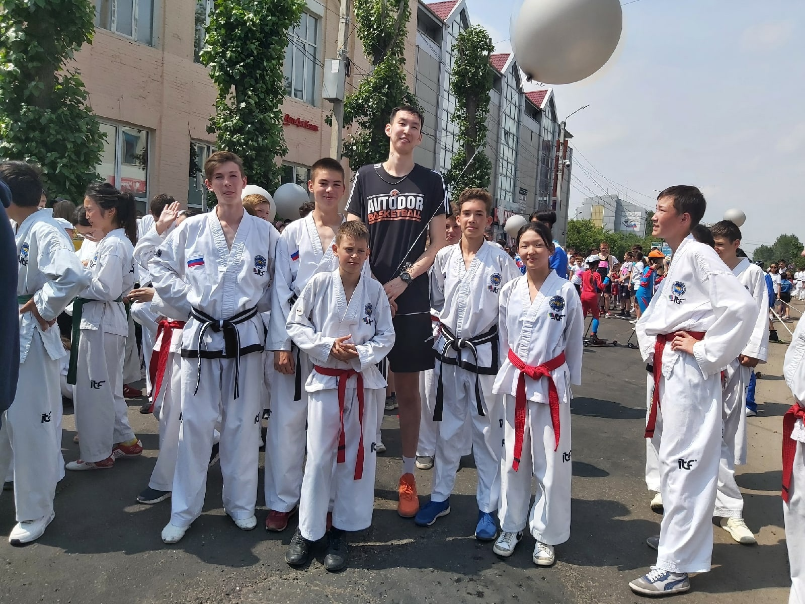

Что такое Taekwon-do
Тхэквондо́, также таэквондо́ (транслитерация с англ. Taekwon-do) — корейское боевое искусство. Характерная особенность — активное использование ног в бою; причём как для ударов, так и для защитных действий. Слово «тхэквондо» складывается из трёх корейских слов: [тхэ] «топтать» + [квон] «кулак» + [до] «путь, метод, учение, дао». Общепринятое литературное толкование звучит как «путь ноги и кулака»
Биография создателя боевого искусства
Чой Хон Хи родился 9 ноября 1918 года в Хадэ (Корея).
Детство и юность Чой Хон Хи пришлись на тот период, когда Корея была оккупирована Японией.
Чхве Хон Хи в юности изучал Сётокан-каратэ-до и после усердных тренировок стал обладателем чёрного пояса — высшего дана.
Активно участвовал в национально-освободительном движении корейских студентов, за что провёл несколько лет в японских тюрьмах и был освобождён лишь после капитуляции Японии во Второй мировой войне в 1945 году.
В 1946 году он поступил на службу в только что созданную корейскую армию инструктором по каратэ (Тансудо).
Обучая солдат приёмам карате, Чой Хон Хи постоянно совершенствовал методику занятий, да и сами приёмы.
В результате этих экспериментов в течение последующих десяти лет он создал фактически новое боевое искусство, которое было названо «тхэквондо».
Благодаря своим заслугам Чой Хон Хи достаточно быстро дослужился до звания генерала.
Его мечтой было распространение Тхэквондо по всему миру.
В этом он видел торжество достижений многовековой корейской цивилизации.
В 1961 году он создал и возглавил Федерацию Тхэквондо Южной Кореи.
А ещё спустя 5 лет, в 1966 году стараниями Чхве Хон Хи была создана Международная федерация тхэквондо (ITF) и он стал её первым президентом.
Мой путь в тхэквон-до
С тхэквон-до меня познакомил брат в 2012 году. Я сразу же начал ходить и со временем стал лучше. Достиг больших регалий: получил КМС, чемпион России, Призёр России и многое другое. За 11 лет я очень полюбил тхэквон-до.
Мои трофии
За свою карьеру я удостоился множества регалий.
- Призёр кубка"Московский вызов"
- Чемпион Республики Бурятия
- Победитель чемпионата России
- Призёр чемпионата России
- Призер кубка Байкала